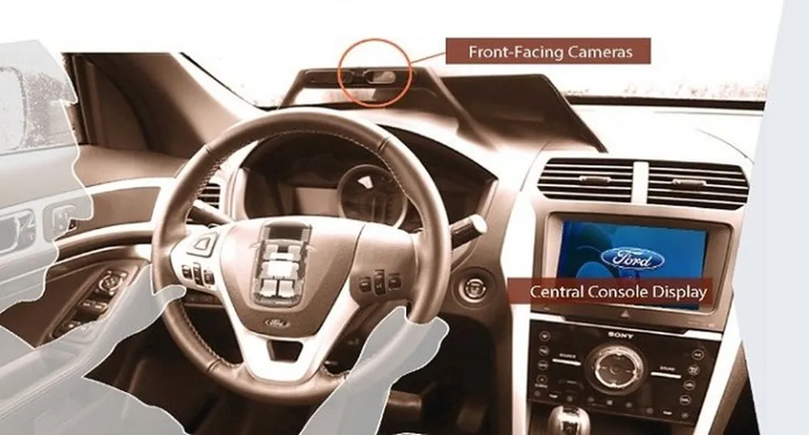

Internet das Coisas
A “Internet das Coisas” (em inglês, Internet of Things, ou IoT) corresponde a uma revolução tecnológica que tem como objetivo conectar itens usados no dia a dia, como eletrodomésticos, meios de transporte, tênis, roupas e até maçanetas, à rede mundial de computadores.
Como funciona a Internet das Coisas
O protótipo Mobii, que estava sendo desenvolvido pela Ford e pela Intel em 2014, pretendia reinventar o interior dos automóveis. Ao entrar em um carro com essa tecnologia, uma câmera faria o reconhecimento do rosto do motorista, a fim de oferecer informações sobre seu cotidiano, recomendar músicas e receber orientações para acionar o mapa com GPS.
Se o sistema não reconhecer a pessoa, ele tira uma foto e manda as informações para o celular do
dono, evitando furtos. Esse é um exemplo de um carro dentro de um ambiente da Internet das Coisas, com acessórios
online e agindo de maneira inteligente.
Outro exemplo de aplicação da Internet das Coisas envolve uma parceria da fabricante de elevadores TK Elevator com
a Microsoft. Juntas, as empresa desenvolveram um sistema inteligente e online para monitorar os elevadores por
meio de call centers e técnicos. O software funciona em grandes redes de computadores de mesa e portais, além de
rodar em um app para tablets com Windows.
O intuito do programa é prestar assistência em tempo real e evitar acidentes com manutenções preventivas nos
elevadores da marca. Essa iniciativa resulta em uma redução de custo e é um exemplo de aplicabilidade da Internet
das Coisas em infraestrutura.